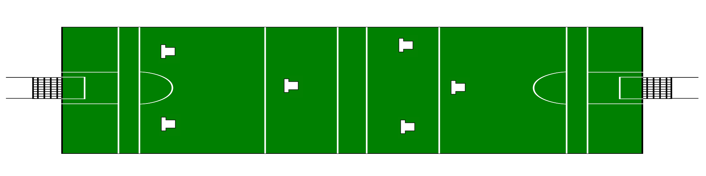
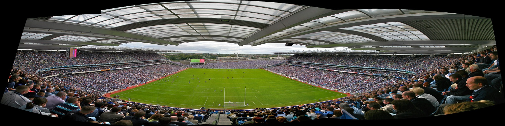
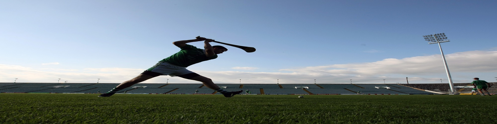
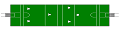

Home
GAA Official Site
Recent Results
Forum
.

Choose your
Team

Watch the
Games

Check your
Points
Current
Choose

Croke Park
Hurler
A
View my Team
Take a look at how you're doing
I
Make transfers
Use your transfers to optimise team
C
See fixtures
View upcoming hurling fixtures
S
See Rankings
View the top 10 players overall
RSS Feed Widget